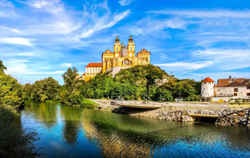
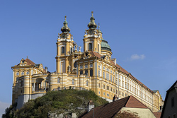
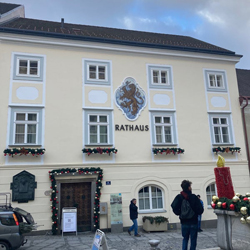
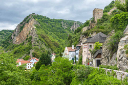

Click in any field below to hear the sentence read aloud.
Click in any field below to reveal a translation.
| Melk ist eine Stadt in Niederösterreich, Österreich. Sie liegt am Ufer der Donau und ist vor allem für ihr beeindruckendes Benediktinerstift bekannt. Die Stadt hat eine lange Geschichte, die bis ins 9. Jahrhundert zurückreicht, als hier ein Kloster gegründet wurde. |  |
Melk is a city in Lower Austria, Austria. It is located on the banks of the Danube and is primarily known for its impressive Benedictine pen. The city has a long history that goes back to the 9th century when a monastery was founded here.
Geographie und Lage:
Melk befindet sich im nordöstlichen Teil von Niederösterreich, etwa 80 Kilometer westlich von Wien. Die Stadt liegt am südlichen Ufer der Donau und erstreckt sich entlang des Flusses. Die umliegende Landschaft ist geprägt von sanften Hügeln und grünen Wiesen.
Melk befindet sich im nordöstlichen Teil von Niederösterreich, etwa 80 Kilometer westlich von Wien. Die Stadt liegt am südlichen Ufer der Donau und erstreckt sich entlang des Flusses. Die umliegende Landschaft ist geprägt von sanften Hügeln und grünen Wiesen.
Geography and location:
Melk is located in the northeastern part of Lower Austria, about 80 kilometers west of Vienna. The city is located on the southern bank of the Danube and stretches along the river. The surrounding landscape is characterized by gentle hills and green meadows.
Melk is located in the northeastern part of Lower Austria, about 80 kilometers west of Vienna. The city is located on the southern bank of the Danube and stretches along the river. The surrounding landscape is characterized by gentle hills and green meadows.
| Sehenswürdigkeiten:: Das bekannteste Wahrzeichen von Melk ist das Stift Melk, ein Benediktinerkloster, das hoch über der Stadt auf einem Felsen thront. Das Stift wurde im 11. Jahrhundert gegründet und im Laufe der Jahrhunderte mehrmals erweitert und renoviert. Es ist ein beeindruckendes Beispiel für barocke Architektur und beherbergt eine Vielzahl von kunstvollen Räumen wie die Stiftskirche, die Bibliothek und das Kaiserzimmer. |
 |
Sightseeing attractions:
Melk's best -known symbol is the Melk Abbey, a Benedictine monastery that is enthroned high above the city on a rock. The abbey was founded in the 11th century and expanded and renovated several times over the centuries. It is an impressive example of baroque architecture and houses a variety of artistic rooms such as the collegiate church, the library and the imperial room.
Melk's best -known symbol is the Melk Abbey, a Benedictine monastery that is enthroned high above the city on a rock. The abbey was founded in the 11th century and expanded and renovated several times over the centuries. It is an impressive example of baroque architecture and houses a variety of artistic rooms such as the collegiate church, the library and the imperial room.
| Neben dem Stift gibt es noch weitere interessante Sehenswürdigkeiten in Melk. Dazu gehören das Rathaus im Renaissancestil, das Schloss Schallaburg aus dem 16. Jahrhundert und die Pfarrkirche St. Stephan mit ihrem markanten Turm. |  |
In addition to the abbey, there are other interesting sights in Melk. These include the town hall in the Renaissance style, the Schallaburg Castle from the 16th century and the parish church of St. Stephan with its striking tower.
Kultur und Veranstaltungen:
Melk bietet auch kulturelle Veranstaltungen und Festivals für Besucher und Einheimische. Das jährliche “Wachaufestival” ist ein Musikfestival, das hochkarätige Künstler und Bands aus verschiedenen Genres präsentiert. Es findet im Stiftspark statt und bietet eine malerische Kulisse für die Konzerte.
Melk bietet auch kulturelle Veranstaltungen und Festivals für Besucher und Einheimische. Das jährliche “Wachaufestival” ist ein Musikfestival, das hochkarätige Künstler und Bands aus verschiedenen Genres präsentiert. Es findet im Stiftspark statt und bietet eine malerische Kulisse für die Konzerte.
Culture and events:
Melk also offers cultural events and festivals for visitors and locals. The annual "Wachaufival" is a music festival that presents top -class artists and bands from various genres. It takes place in the abbey park and offers a picturesque backdrop for the concerts.
Melk also offers cultural events and festivals for visitors and locals. The annual "Wachaufival" is a music festival that presents top -class artists and bands from various genres. It takes place in the abbey park and offers a picturesque backdrop for the concerts.
Die Umgebung von Melk bietet zahlreiche Möglichkeiten für Outdoor-Aktivitäten. Entlang der Donau gibt es Radwege, die sich ideal zum Fahrradfahren und Wandern eignen. Bootsfahrten auf der Donau sind ebenfalls beliebt, um die schöne Landschaft zu genießen.
Nature and leisure activities:
The area around Melk offers numerous options for outdoor activities. There are cycle paths along the Danube that are ideal for cycling and hiking. Boat trips on the Danube are also popular to enjoy the beautiful landscape.
The area around Melk offers numerous options for outdoor activities. There are cycle paths along the Danube that are ideal for cycling and hiking. Boat trips on the Danube are also popular to enjoy the beautiful landscape.
| In der näheren Umgebung von Melk befindet sich die Wachau, eine Region mit malerischen Weinbergen, charmanten Dörfern und Burgruinen. Hier kann man Weinverkostungen machen, Wanderungen unternehmen oder einfach nur die idyllische Atmosphäre genießen. |
 |
In the vicinity of Melk lies the Wachau, a region with picturesque vineyards, charming villages and castle ruins. Here you can make wine tastings, take hikes or just enjoy the idyllic atmosphere.